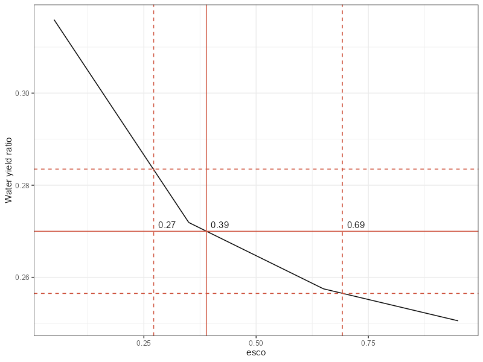
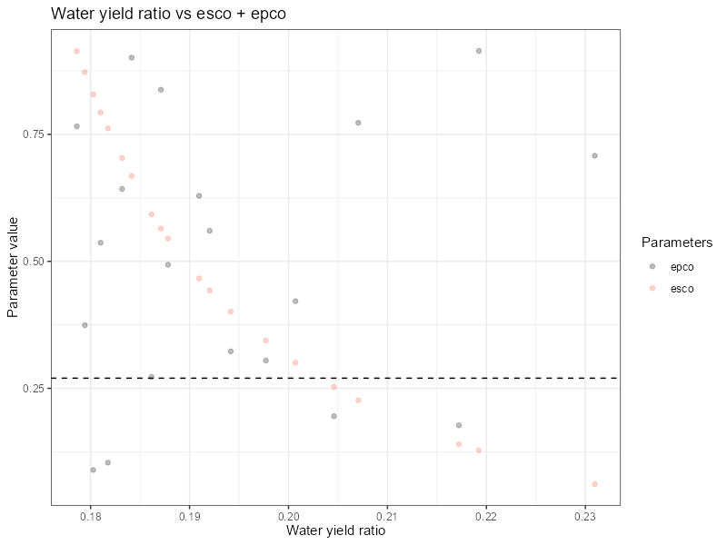

Water Yield
Soft calibration workflow for water yield in SWAT+ models
Source:vignettes/sc-wy.Rmd
sc-wy.RmdThe aim of water yield calibration is to adjust relevant hydrological parameters so that the average annual water yield simulated by SWAT+ matches with observations or reported values. In the proposed workflow, this step follows after the crop yield calibration described in the previous article. One argument for water yield soft calibration is that it ensures that the partition of precipitation into two main components, water yield and evapotranspiration, is plausible before starting hard calibration using time series data.
1. Loading required packages
If those have not yet been loaded with crop yields soft calibration, please load the following libraries.
2. Defining settings
This step requires defining the SWAT+ model path the observed water yield to precipitation ratio.
# Path to the SWAT+ model
model_path <- '../test/my_dearest_model'
# Set the path to save results of the soft calibration
sc_res <- '../test/simulations'
# Observed water yield to precipitation ratio
obs_wy_ratio <- 0.27
# Set the number of cores available for calculations.
# Number of cores for 12 runs use 3, 4, 6, or 12 cores (if available)
cores <- 3
# Start date for model runs (if NULL, the start date of the model setup files
# will be used!!!)
start_date <- NULL # start_date <- '2000-01-01'
# End date for model runs (if NULL, the end date of observation data will be used).
end_date <- NULL # end_date <- '2010-12-31'
## Years to skip in the simulation period (if NULL, print.prt value will be used)
years_skip <- NULL 3. Defining esco parameter range and running the
model
The soil evaporation compensation factor (esco) is an
important coefficient in modeling soil moisture dynamics. It allows
users to adjust the depth distribution used to satisfy soil evaporative
demand, accounting for factors such as capillary action, crusting, and
cracks. By increasing the esco value, the model can draw
more of the evaporative demand from deeper soil layers. This means that
the model has reduced amount of water available for water yield.
esco values range from 0.01 to 1.
In the example below, esco is sampled in the range
(0.05, 0.95). To correctly calculate water yield ratio, numerous SWAT+
outputs have to be extracted in the run_swatplus function. Simulation
period should ideally match with the period for which observed water
yield ratio value was acquired.
# The esco parameter range is sampled.
esco <- tibble('esco.hru | change = absval' = seq(0.05,0.95, length.out = max(cores, 4)))
sim_esco <- run_swatplus(project_path = model_path,
output = list(precip = define_output('basin_wb_day',
'precip',
1),
surq_cha = define_output(file = 'basin_wb_day',
variable = 'surq_cha',
unit = 1),
surq_res = define_output(file = 'basin_wb_day',
variable = 'surq_res',
unit = 1),
latq_cha = define_output(file = 'basin_wb_day',
variable = 'latq_cha',
unit = 1),
latq_res = define_output(file = 'basin_wb_day',
variable = 'latq_res',
unit = 1),
qtile = define_output(file = 'basin_wb_day',
variable = 'qtile',
unit = 1),
flo = define_output(file = 'basin_aqu_day',
variable = 'flo',
unit = 1)
),
parameter = esco,
start_date = start_date,
end_date = end_date,
years_skip = years_skip,
n_thread = cores)
## Save the results to the file
saveRDS(sim_esco, paste0(sc_res, "/sim_esco.rds"))4. Extracting and plotting water yield ratio vs esco
parameter values
The water yield ratio is calculated for each simulation. The range of
esco values that produce water yield ratios within a
specified range of the observed water yield ratio is identified using
the plot_esco_range
function. The relative range for acceptable error
rel_wyr_lim can be provided as an additional argument (by
default it is set to 0.05, as in the example plot below).
plot_esco_range(sim_esco, obs_wy_ratio)The plot below shows the relationship between esco and
water yield presented as an interpolated line. Dashed horizontal lines
show the predefined acceptable range for the water yield values. The
corresponding range for esco can be read from the
corresponding dashed vertical lines.

5. (Optional) Water yield calibration using additional parameters
In certain situations esco parameter might not be enough
to reach observed water yield ratio. An addition of the plant uptake
compensation factor (epco) might help in such cases. This
parameter determines how water uptake is distributed across soil layers
to meet plant transpiration needs. If the upper soil layers lack
sufficient water, the model can draw more water from deeper layers, a
process governed by the epco value. When epco
is close to 1.0, there is greater flexibility, allowing
significant compensation from lower soil layers. Conversely, when
epco is near 0.0, the model restricts water uptake
primarily to the original depth distribution, limiting compensation from
deeper layers.
In the example below, esco and epco are
sampled using LHS sampling, which is followed by running SWAT for the
derive parameter combinations. Results could be plotting with plot_dotty function to visualize
parameters’ sensitivities and how the parameters affect water yield
ratios.
# The esco and epco parameter range is defined .
par_bnd <- tibble('esco.hru | change = absval' = c(0.05, 0.95),
'epco.hru | change = absval' = c(0.05, 0.95))
# And sampled with lhs
esco_epco <- sample_lhs(par_bnd, 20)
##Run simulations for defined parameter sets
sim_esco_epco <- run_swatplus(project_path = model_path,
output = list(precip = define_output('basin_wb_day',
'precip',
1),
surq_cha = define_output(file = 'basin_wb_day',
variable = 'surq_cha',
unit = 1),
surq_res = define_output(file = 'basin_wb_day',
variable = 'surq_res',
unit = 1),
latq_cha = define_output(file = 'basin_wb_day',
variable = 'latq_cha',
unit = 1),
latq_res = define_output(file = 'basin_wb_day',
variable = 'latq_res',
unit = 1),
qtile = define_output(file = 'basin_wb_day',
variable = 'qtile',
unit = 1),
flo = define_output(file = 'basin_aqu_day',
variable = 'flo',
unit = 1)
),
parameter = esco_epco,
start_date = start_date,
end_date = end_date,
years_skip = years_skip,
n_thread = cores)
## Save the results to the file
saveRDS(sim_esco_epco, paste0(sc_res, "/sim_esco_epco.rds"))
## Plot the results
plot_dotty(as.data.frame(calculate_wyr(sim_esco_epco)),
list(sim_esco_epco$parameter$values$epco,
sim_esco_epco$parameter$values$esco),
list("epco", "esco"))+
labs(x = "Water yield ratio", y = "Parameter value", color = "Parameters", title = "Water yield ratio vs esco + epco")+
geom_vline(xintercept = obs_wy_ratio, linetype="twodash", color = "red", size=0.75)+
theme(strip.background = element_blank(), strip.text = element_blank()) +
coord_flip()
6. Updating parameter values in the 'hydrology.hyd'
file
After determining which model parameter values allow the simulated
water yield ratio to match the observed values, these parameters need to
be updated in the 'hydrology.hyd' file. The following code
snippet backs up existing file and updates values in it. The optimal
value of esco can be read directly from the plot generated
in step 4.
## Initialize unmodified backup version of hydrology.hyd
if(!file.exists(paste0(model_path, '/hydrology.hyd.bkp0'))) {
copy_file_version(model_path, 'hydrology.hyd', file_version = 0)
}
# Read the hydrology.hyd input file
hydrology_hyd <- read_tbl(paste0(model_path, '/hydrology.hyd.bkp0'))
hydrology_hyd$esco <- 0.39
## If needed update epco as well
## hydrology_hyd$epco <- some value
## Update hydrology.hyd file
write_tbl(hydrology_hyd, paste0(model_path, '/hydrology.hyd'), c('%-16s', rep('%12.5f', 14)))7. Final recheck for yield results
Updating parameters in the 'hydrology.hyd' file might
impact crop yield simulation (it could be expected more from the
epco parameter than from esco, but still it is
possible). To ensure that the water yield soft calibration has not
adversely affected the crop yield soft calibration, it is important to
recheck it at the end. If the results match the observed yields, the
soft calibration is complete. Otherwise, you should consider revisiting
the crop yield soft calibration
steps.
## Rerun model for crop yields results
phu_yld_recheck <- run_swatplus(project_path = model_path,
output = list(yld = define_output(file = 'mgtout',
variable = 'yld',
unit = crops),
bms = define_output(file = 'mgtout',
variable = 'bioms',
unit = crops),
phu = define_output(file = 'mgtout',
variable = 'phu',
unit = crops)),
start_date = start_date,
end_date = end_date,
years_skip = years_skip)
## Save the results to the file
saveRDS(phu_yld_recheck, paste0(sc_res, "/phu_yld_recheck.rds"))
## Plot yields
plot_phu_yld_bms(phu_yld_recheck, 0, yield_mean, yield_min, yield_max)For a more in-depth analysis, users can employ at this stage
additional SWATdoctR
functions, such as plot_waterbalance(). This function
enables visualization of the average annual water balance
components.
The workflow presented in this article involves using only water
yield ratio. However, soft calibration of the catchment water balance
could in addition involve other metrics, such as the baseflow ratio. IN
this case, the workflow could be adapted by the user by including an
additional SWAT+ parameter (e.g. perco) and adding the code
to calculate the new metrics.
In the proposed workflow, after completing the soft calibration process for crops and water balance, the users are advised to proceed with the hard calibration of basin hydrology (involving the use of daily or monthly time series data) presented in an another page.